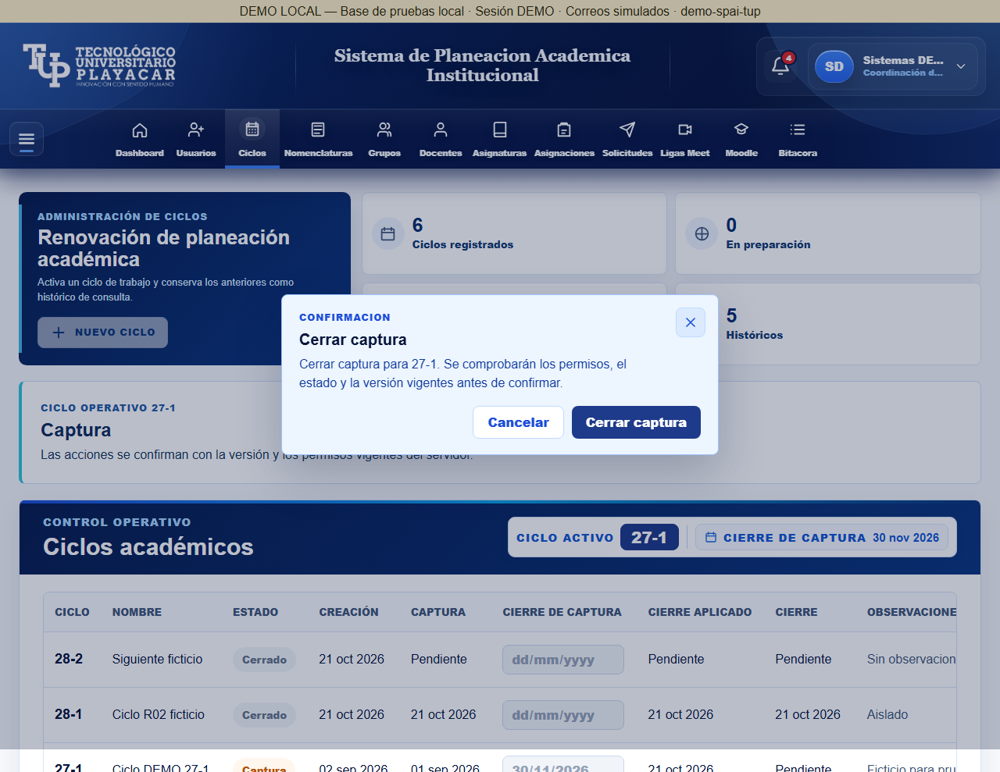
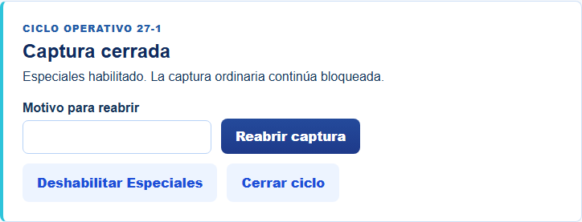
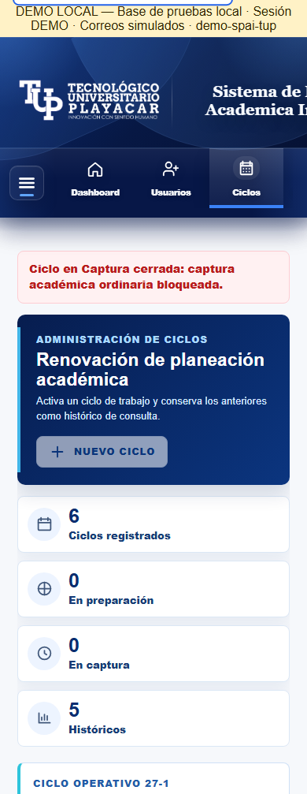
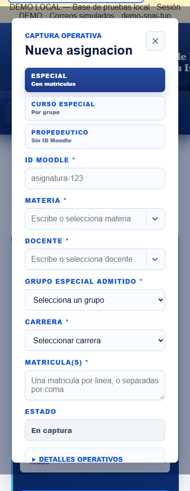
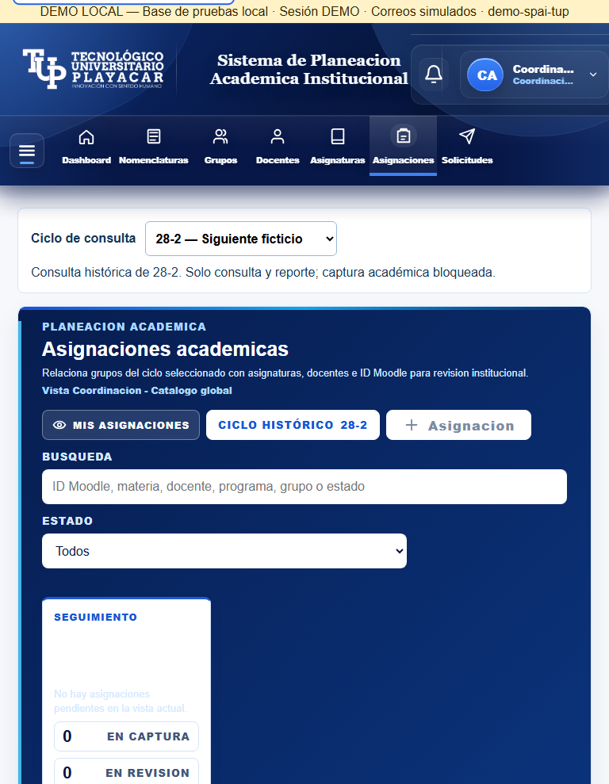
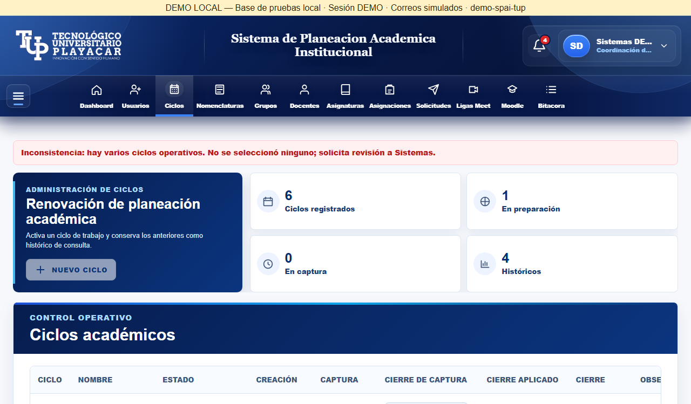
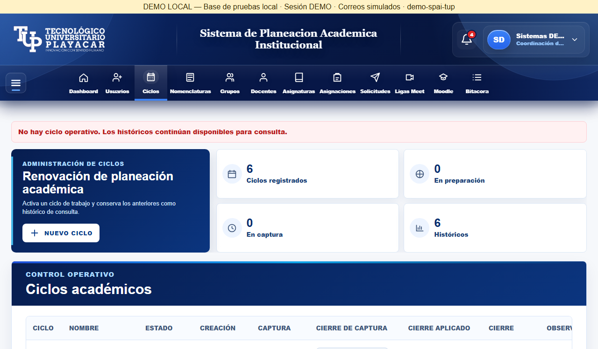

21/10/2026. Datos ficticios, entorno aislado. Inspección técnica de Codex; aceptación humana pendiente. R02 NO VALIDADA: seis contratos inconclusos por Rules. La LAN conserva R01.
Informe y limitaciones






